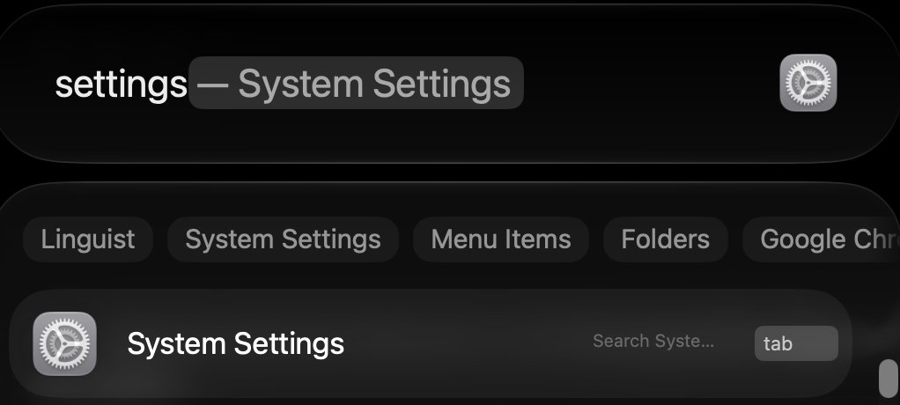
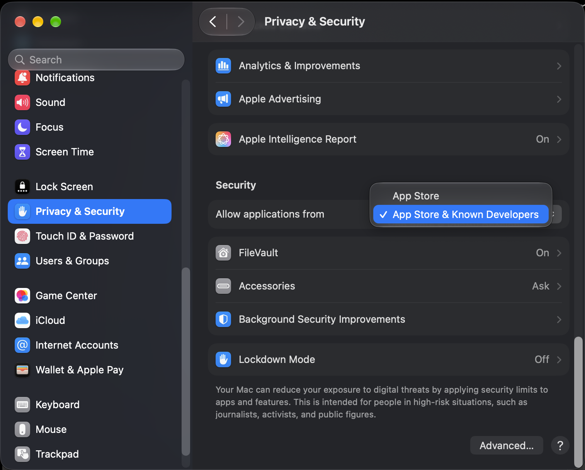
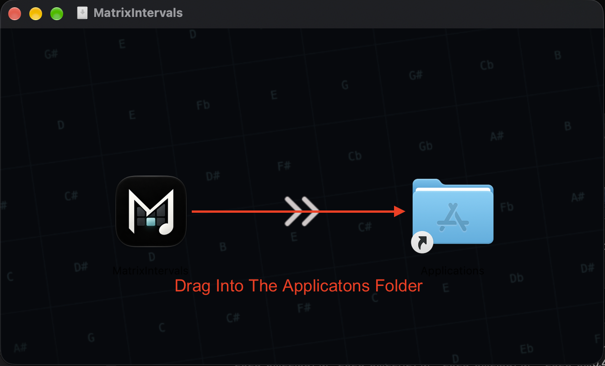
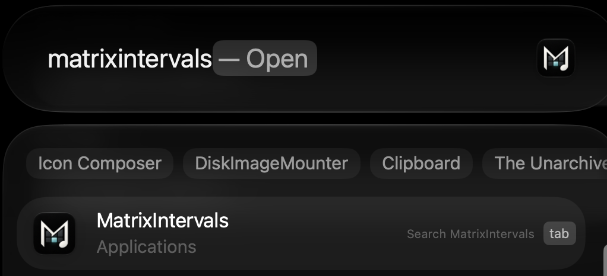
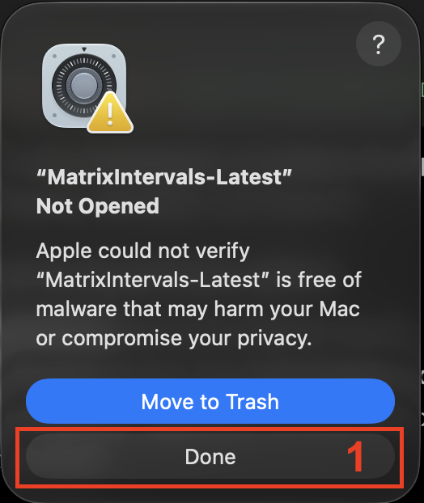
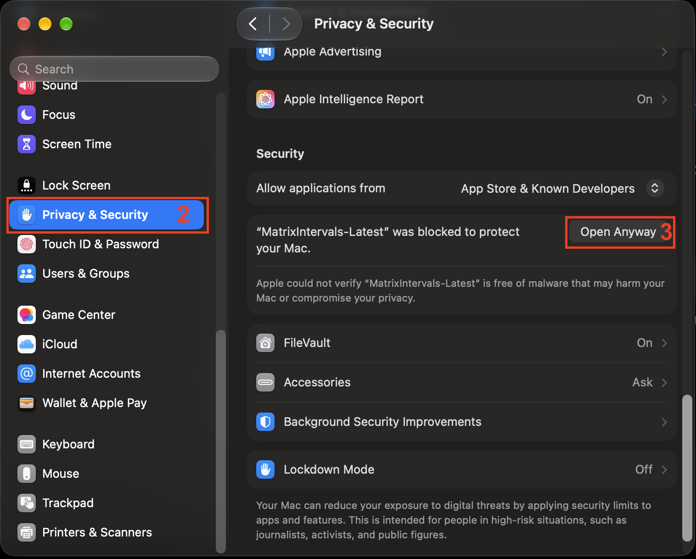
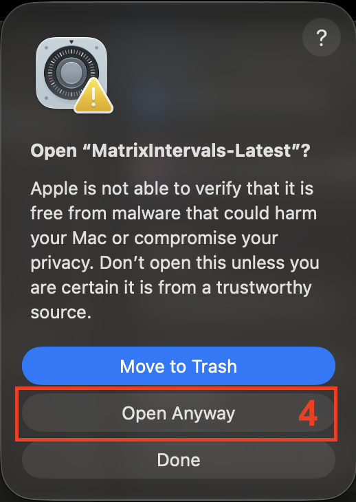

macOS
نصب ماتریکس اینتروالز برای macOS.
برای نصب و اجرای MatrixIntervals روی macOS، مراحل زیر رو دنبال کنید.
دانلود MatrixIntervals
آخرین نسخه MatrixIntervals مربوط به macOS رو از صفحه دانلود دریافت کنید.
دانلود۱. اجازه نصب برنامههای مورد اعتماد رو فعال کنید
وارد System Settings شوید.

وارد بخش Privacy & Security شوید و گزینه Allow applications from رو روی App Store & Known Developers قرار دهید.

۲. Installer رو اجرا کنید
فایل .dmg دانلودشده رو باز کنید،
سپس MatrixIntervals رو به پوشه Applications منتقل کنید.

۳. MatrixIntervals رو اجرا کنید
MatrixIntervals رو از پوشه Applications اجرا کنید یا آن رو از طریق Spotlight باز کنید.

۴. اجازه اجرای MatrixIntervals از Gatekeeper
ممکنه Gatekeeper هنگام اولین اجرا، اجرای MatrixIntervals رو مسدود کنه. در این صورت، میتونید اجازه اجرای برنامه رو از طریق System Settings صادر کنید.

وارد System Settings شوید، به بخش Privacy & Security بروید و روی Open Anyway کلیک کنید.

یک پنجره تأیید نمایش داده میشود. روی Open Anyway کلیک کنید تا MatrixIntervals اجرا شود.
